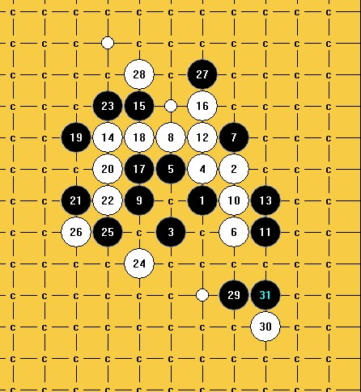
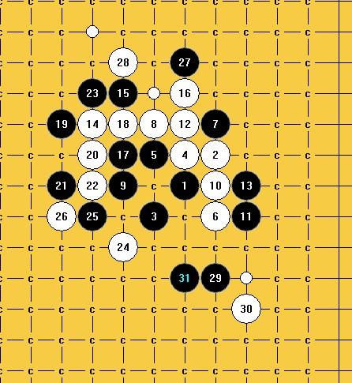
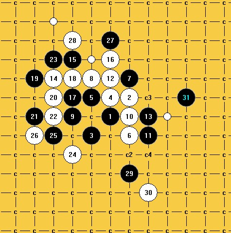
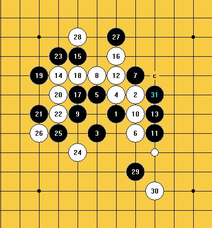
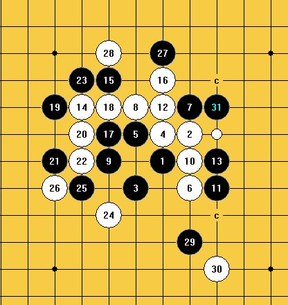
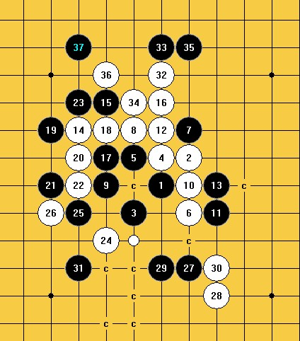

令人扑朔迷离的斜月二打弱30
#1 令人扑朔迷离的斜月二打弱30 作者：山城刀客 发表时间：2012-7-12 16:57:09
29之前均为定式，30直接外挡黑棋眠3，这个30让我拆的头晕目眩。
下面为我拆的部分31，均有唯一强防，郁闷呀。






实在是拆不出来地毯，30到底是不是必败呢？求高人指点！
［ 冰雪笑醉 于 2012-7-12 19:22:37 时花20金币送鲜花一朵］
［ 冰雪笑醉 于 2012-7-12 19:22:37 时花20金币送鲜花一朵］
［ 冰雪笑醉 于 2012-7-12 19:22:37 时花20金币送鲜花一朵］
［ 冰雪笑醉 于 2012-7-12 19:22:37 时花20金币送鲜花一朵］
［ 冰雪笑醉 于 2012-7-12 19:22:37 时花20金币送鲜花一朵］
#2 Re:令人扑朔迷离的斜月二打弱30 作者：极地剑客 发表时间：2012-7-12 18:04:29
有mm就有［ 山城刀客 于 2012-7-12 23:02:14 时花20金币送鲜花一朵］
#3 Re:令人扑朔迷离的斜月二打弱30 作者：与郎共五 发表时间：2012-7-12 19:25:37
29H5不可以吗？［ 山城刀客 于 2012-7-12 23:00:54 时花20金币送鲜花一朵］
#4 Re:令人扑朔迷离的斜月二打弱30 作者：山城刀客 发表时间：2012-7-12 21:40:29

这个也是唯一
#5 Re:令人扑朔迷离的斜月二打弱30 作者：逆刃 发表时间：2012-7-12 21:51:37
LS发爱五子棋的贴图比较好吧，方便复制代码。
#6 Re:令人扑朔迷离的斜月二打弱30 作者：逆刃 发表时间：2012-7-12 21:53:42
因为我怀疑我是不是看错了，4楼的白点貌似简单杀啊！#7 Re:令人扑朔迷离的斜月二打弱30 作者：逆刃 发表时间：2012-7-12 22:28:50
1L的图中，中间有个31感觉应该是能杀的，LZ不妨再看看。比如：
再拆拆看~
［ 山城刀客 于 2012-7-12 22:56:02 时花20金币送鲜花一朵］
［ 山城刀客 于 2012-7-12 22:56:02 时花20金币送鲜花一朵］
#8 Re:令人扑朔迷离的斜月二打弱30 作者：虎哥 发表时间：2012-7-12 22:33:42
。。这个不是杀了么
［ 山城刀客 于 2012-7-12 22:56:42 时花20金币送鲜花一朵］
［ 山城刀客 于 2012-7-12 22:56:42 时花20金币送鲜花一朵］
#9 Re:令人扑朔迷离的斜月二打弱30 作者：山城刀客 发表时间：2012-7-12 22:43:56
哎呀 路上的虎哥的思路简单杀呀，我为什么就没算到？真是白费了那么多的时间！
逆刃兄的几个思路我再拆拆。
#10 Re:令人扑朔迷离的斜月二打弱30 作者：屏蔽 发表时间：2012-7-12 23:07:56
为啥1L和4L的手顺不一样呢#11 Re:令人扑朔迷离的斜月二打弱30 作者：业余九级菜手 发表时间：2012-7-15 21:57:26
有4